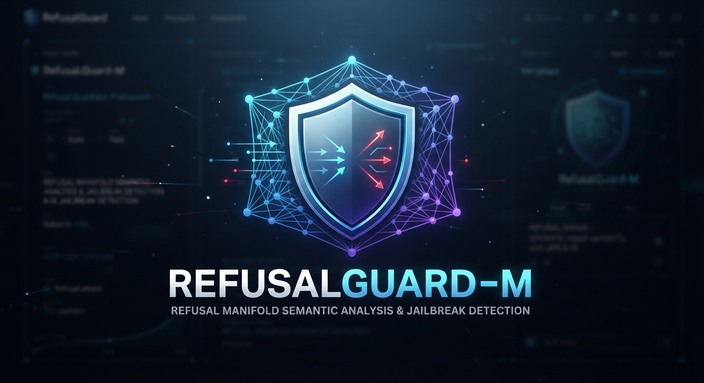
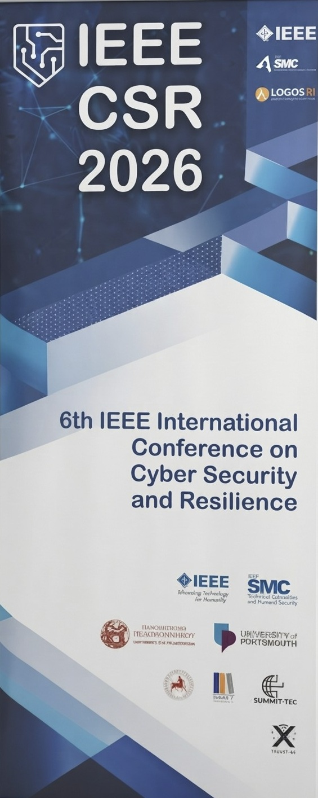
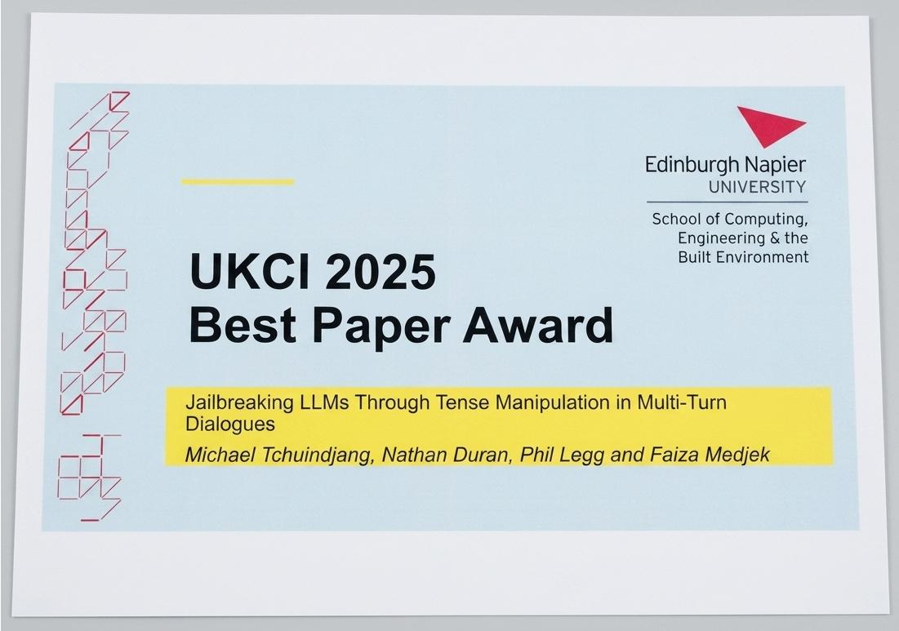

LLM Security
Security, robustness and reliability of large language models operating in adversarial environments.
Cybersecurity thought leader & researcher working at the intersection of AI security, LLM security, adversarial AI and cybersecurity.
My research explores how adversarial interactions can manipulate AI systems and how we can build more reliable, interpretable and scalable defences.
My work focuses on making increasingly capable AI systems more secure, reliable and resilient against adversarial behaviour.
I am a cybersecurity thought leader and researcher specialising in AI security and Large Language Model security, with particular interests in jailbreak attacks, adversarial AI, safety evaluation and defensive mechanisms.
My research investigates how attackers manipulate language models through linguistic reformulation, conversation history and multi-turn interactions, and how these behaviours can be detected and mitigated.
I am particularly interested in the intersection of cybersecurity, artificial intelligence, machine learning and human judgement.
"How can we make increasingly capable AI systems more difficult to manipulate and more reliable to evaluate?"
My research addresses this question through the study of adversarial interactions, multi-turn jailbreaks, semantic representations and practical AI defence mechanisms.
My research spans several connected areas of cybersecurity and artificial intelligence.
Security, robustness and reliability of large language models operating in adversarial environments.
Understanding how harmful intent can emerge through conversation history, linguistic reformulation and gradual escalation.
Exploring semantic and internal representations as mechanisms for understanding and defending AI systems.
Human-machine agreement, semantic evaluation and reliable safety assessment of AI systems.
RefusalGuard-M is an open-source semantic evaluation framework for assessing LLM jailbreak interactions. It constructs a semantic refusal manifold from human-validated refusal responses and uses embedding-based geometric representations to identify deviations from expected refusal behaviour.
The Grammatical Mirage Attack is a novel multi-turn adversarial attack method that exploits structured linguistic transformations and temporal variation across dialogue turns to progressively steer language models towards unsafe behaviour while attempting to bypass single-turn safety constraints.
Research contributions across AI security, cybersecurity and adversarial machine learning.
Michael Tchuindjang et al. Cybersecurity, Springer Nature.
Michael Tchuindjang et al. ISNCC 2026, IEEE.
Michael Tchuindjang et al. UKCI 2025, Springer Nature.
Conferences, research milestones, awards, talks and other activities from my academic and professional journey.

Excited to share the publication of our research introducing RefusalGuard-M, an open-source framework for semantic evaluation of LLM jailbreaks.
Read the paper →
Glad to have attended IEEE CSR 2026 in Lisbon, bringing together researchers and professionals working on cybersecurity, resilience and emerging technologies.
Read more →
Honoured to receive the Best Paper Award at UKCI 2025 for our contribution to cybersecurity and artificial intelligence research.
Read more →Delighted to present my research on AI security and LLM jailbreaks at the UWE Engineering Showcase, sharing insights into building safer and more reliable AI systems.
Read more →Semantic evaluation framework for assessing multi-turn LLM jailbreak interactions.
GitHub →Lightweight automated solver for CutCAPTCHA challenges using Canny edge detection and template matching without machine learning.
GitHub →Research prototypes exploring multi-turn jailbreaks, adversarial prompting and defensive mechanisms for large language models.
View projects →Cybersecurity professional assessment, expert contribution through the UK Cyber Security Council Expert Volunteer Panel, and support for professional standards and knowledge development.
Advising organisations on AI security, LLM risks, adversarial AI, and responsible AI adoption, while supporting strategic decision-making, risk management, and the development of secure and trustworthy AI systems.
Researching LLM security, multi-turn jailbreak attacks, and defensive mechanisms using representation engineering and semantic approaches, while supervising MSc students in Cybersecurity and AI and reviewing research for Elsevier Information Sciences journal.
University of the West of England, Bristol.
Software development, IT management and technology education.
Teaching and academic support across cybersecurity, software engineering and emerging AI security topics.
Mentoring students and professionals in cybersecurity, technology and career development.
Peer reviewing research contributions in cybersecurity, artificial intelligence and related areas.
Supporting professional cybersecurity assessment activities and knowledge development.
Writing and communicating cybersecurity research, emerging threats and AI security topics.
Sharing accessible perspectives on cybersecurity, artificial intelligence and responsible technology.
Supporting MSc students in transforming academic projects into research contributions, publications and recognised work.
Research paper developed by Chris Mayostrong> from an MSc dissertation under my supervision at the University of West of England (UWE), exploring Cybersecurity / Phishing / Explainable AI (XAI).
Recognition: Published Research, Future Internet (MDPI)
Research developed by Mohammed Almasabistrong> from an MSc project under my supervision at the University of West of England (UWE), and subsequently developed into a research publication in Cybersecurity / LLM / Prompt Injection.
Recognition: Editor's choice, Algorithms (MDPI)
I am interested in research collaborations, academic discussions, cybersecurity, AI security and opportunities to contribute to the development of safer and more reliable AI systems.